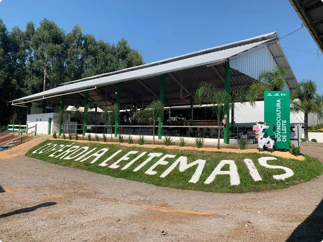

Conforme dados do Município de Concórdia (2021), o município ultrapassou a marca de R$ 1 bilhão em negócios gerados pela comercialização de produtos primários da agropecuária, tendo por base o ano de 2020. O movimento foi gerado através da compra e venda com a utilização da Nota Fiscal do Produtor Rural.
Por ordem na cadeia produtiva, os maiores geradores no movimento foram, a produção de suínos em primeiro lugar, seguido por aves e depois leite. Concórdia ocupa o primeiro lugar em produção de suínos em Santa Catarina, o segundo lugar em produção de aves e possui a maior bacia leiteira do Estado.
O agronegócio faz com que Santa Catarina com frequência seja destaque no mercado global com marcas como BRF, Aurora, entre outras. Na edição de número 92 da Revista Forbes, Concórdia aparece com a Copérdia na lista "Forbes Agro100 - As 100 Maiores Empresas do Agro”. Segunda maior cooperativa agropecuária de Santa Catarina, a Copérdia, somente em 2020 processou 250 milhões de litros de leite. Atualmente a cooperativa possui quase 1000 produtores integrados na atividade que entregam juntos aproximadamente 500 mil litros de leite por dia.

Nesse cenário faz-se necessário o desenvolvimento de Softwares que otimizem e façam com que os produtores tenham mais controle dos fluxos de produção, logística e rastreabilidade de suas propriedades.
O Gerente de Fomento de Leite da Copérdia, Flávio Durante, explica que o principal benefício do uso dessas tecnologias é ter o controle e gestão de plantel. “As propriedades estão ficando cada vez maiores e precisam estar alinhadas com as exigências da indústria leiteira: gestão do plantel, vaca em lactação, preparo, novilhas. gestão de reprodução, de toda a qualidade do leite. Saber ganho de peso, altura, todos os demais indicadores. Gestão das inseminações, partos, doenças, produtividade, custos, resultados, patrimônio”. Com esses dados, é possível obter uma produtividade maior, para que sejam fornecidos uma maior produção a indústria.